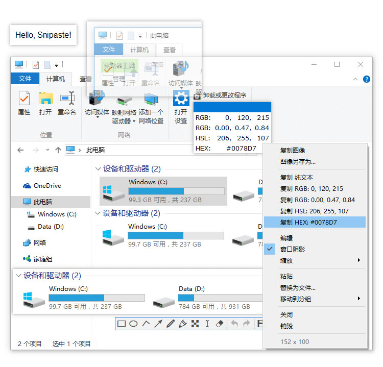

让 Snipaste 帮你提高工作效率
Snipaste 是一个简单但强大的截图工具，也可以让你将截图贴回到屏幕上！下载并打开 Snipaste，按下 F1 来开始截图，再按 F3，截图就在桌面置顶显示了。就这么简单！
你还可以将剪贴板里的文字或者颜色信息转化为图片窗口，并且将它们进行缩放、旋转、翻转、设为半透明，甚至让鼠标能穿透它们！如果你是程序员、设计师，或者是大部分工作时间都在电脑前，贴图功能将改变你的工作方式、提升工作效率。
Snipaste 使用很简单，但同时也有一些较高级的用法可以进一步提升你的工作效率。感兴趣的话，请抽空读一读用户手册。
Snipaste 是免费软件，它也很安全，没有广告、不会扫描你的硬盘、更不会上传用户数据，它只做它应该做的事。
强大的截图
- 自动检测界面元素区域
- 像素级的鼠标移动控制、截图范围控制
- 取色器 (试试 F1, C, F3)
- 历史记录回放 (,/.)
- 支持多屏
- 支持高分屏
把图片作为窗口置顶显示
- 支持将剪贴板中的以下内容转为图片
- 图像
- 纯文本
- HTML 文本
- 颜色信息
- 图像文件：PNG, JPG, BMP, ICO, GIF 等
- 图片窗口支持的操作
- 缩放 (鼠标滚轮 或者 +/-)
- 对于 GIF 图片则是加速/减速
- 旋转 (1/2)
- 对于 GIF 图片则是 上一帧/下一帧
- 镜像翻转 (3/4)
- 设置透明度 (Ctrl + 鼠标滚轮 或者 Ctrl + +/-)
- 鼠标穿透
- 缩略图 (Shift + 双击)
- 图像标注 (空格键)
- 隐藏 (左键双击)
- 取色 (Alt)
- 文件拖放
- 贴图分组
- 自动备份、恢复
